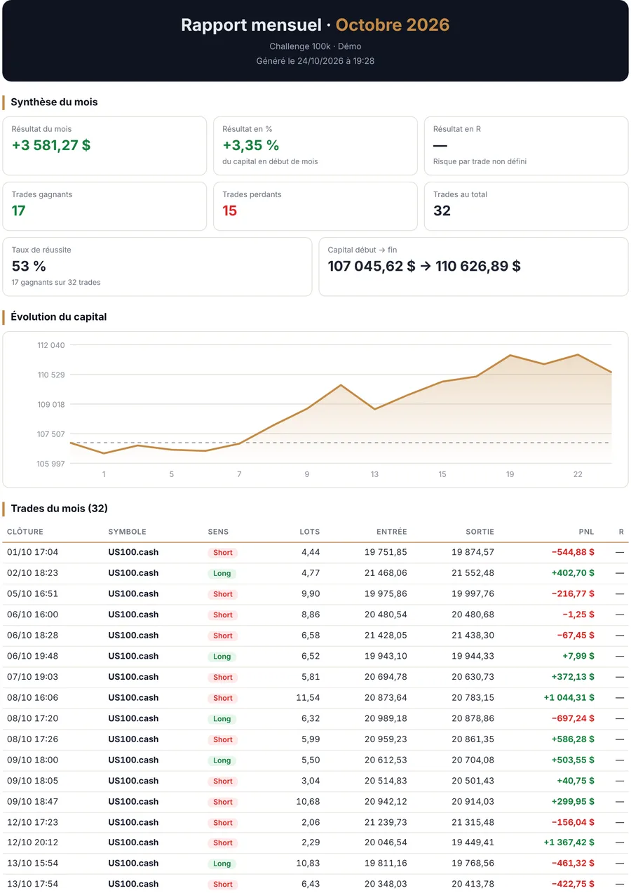
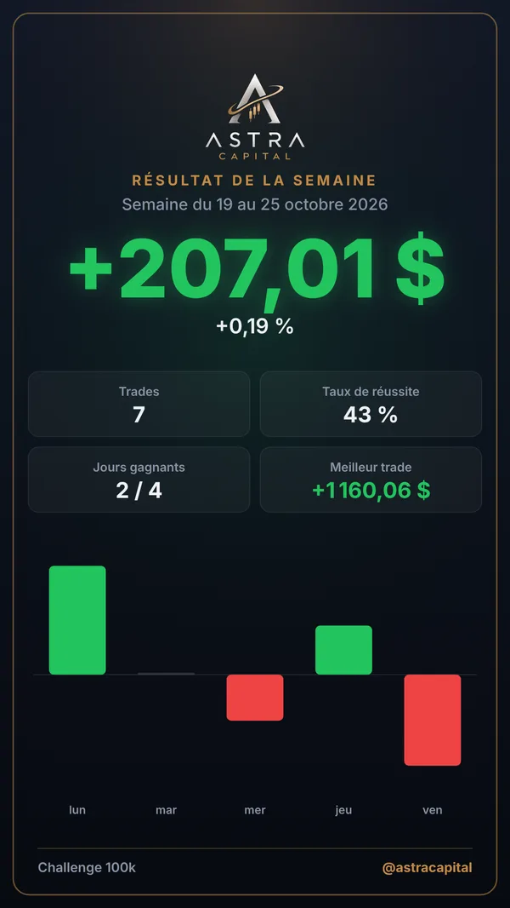
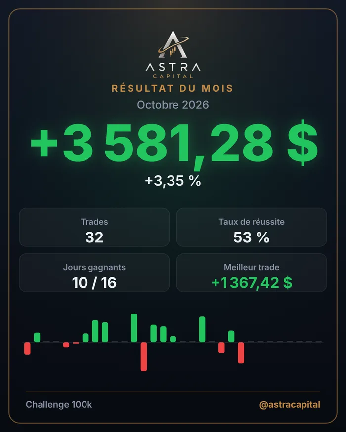
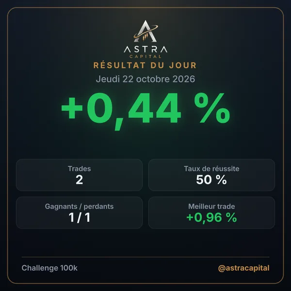

Le dashboard de tous tes comptes de trading.
Ton capital en direct, des statistiques personnalisables, un journal de trading qui se remplit tout seul, ton rapport mensuel en PDF en un clic et le calendrier économique. Tous tes comptes MetaTrader 5, prop firm ou fonds propres, au même endroit.
Tout ce qu'il faut pour piloter tes comptes
Connecte ton compte MetaTrader 5 : l'app lit ton capital et tout ton historique, sans aucune saisie.

Ton capital en direct, et son évolution jour après jour
Le capital de chaque compte, le résultat du mois en euros et en %, et la courbe d'évolution que tu peux zoomer sur la période de ton choix.
- Capital (équité) mis à jour à la seconde
- Courbe de capital : 1 semaine, 1 mois, 1 an ou tout l'historique
- Calendrier des jours gagnants et perdants
- Affichage en EUR, USD, CHF, JPY ou AUD


Des statistiques 100 % personnalisables
Choisis les statistiques que tu veux suivre, range-les dans l'ordre que tu veux, et analyse un mois précis ou tout l'historique du compte.
- Taux de réussite, profit factor, drawdown max, meilleur et pire jour…
- Résultat en R, calculé avec ton propre risque par trade
- Ajout, retrait et déplacement des statistiques en un geste


Les annonces qui font bouger le marché
Le calendrier économique est intégré au dashboard : NFP, CPI, décisions de la Fed et de la BCE… avec les prévisions et les chiffres précédents.
- Filtre par importance (1, 2 ou 3 étoiles) et par zone
- Heures dans ton fuseau horaire
- Actualités économiques par thème : US, Europe, Asie, crypto

Ton journal se remplit seul. Ton rapport mensuel en un clic.
Chaque trade est enregistré automatiquement avec tous ses détails. En fin de mois, un clic suffit pour obtenir ton bilan complet en PDF.
- Date, symbole, sens, volume, frais, résultat en € , en % et en R
- Filtres par mois, trades gagnants ou perdants
- Rapport PDF : synthèse, courbe et liste de tous les trades · offre Pro


Tes résultats, prêts à partager sur les réseaux
Génère une image soignée de ton jour, de ta semaine ou de ton mois, prête à poster sur TikTok, Instagram ou dans ton groupe.PRO
- Formats post, story et carré
- Affichage en montant, en % ou en R
- Ton pseudo et un QR code vers la preuve de tes trades



Les petits plus qui changent tout
Commence gratuitement, choisis ensuite
7 jours d'essai sans carte bancaire. Abonnement sans engagement, résiliable à tout moment.
Prêt en 3 minutes
ASTRA Dashboard pour Windows
Un seul fichier à lancer : l'installation se fait en quelques secondes et crée un raccourci sur le bureau. Les mises à jour s'installent ensuite toutes seules.
Si Windows affiche « Windows a protégé votre ordinateur », clique sur « Informations complémentaires » puis « Exécuter quand même ».
Questions fréquentes
Avec quelles prop firms et quels brokers ça marche ?
Avec tous les comptes MetaTrader 5, quel que soit le fournisseur : les prop firms (FTMO, FundedNext, The5ers…) comme les comptes en fonds propres chez un broker (IC Markets, Pepperstone…), en réel ou en démo. Il suffit du numéro de compte, du nom exact du serveur et du mot de passe investisseur. Les comptes sur d'autres plateformes (MetaTrader 4, cTrader, TradeLocker, DXtrade…) ne sont pas encore pris en charge.
Mes identifiants sont-ils en sécurité ?
Oui. Tout reste sur ton PC : les mots de passe mémorisés sont rangés dans le Gestionnaire d'identification de Windows et ne sont envoyés à aucun serveur. Le mot de passe investisseur suffit, il ne permet que la lecture.
L'app peut-elle passer des ordres ?
Non. ASTRA Dashboard lit seulement ton capital et ton historique pour les analyser. Elle ne passe, ne modifie et ne ferme jamais aucune position.
Ça fonctionne sur Mac ou sur téléphone ?
L'application fonctionne sur Windows 10 et 11, avec MetaTrader 5 installé : la connexion de MetaTrader 5 aux applications n'existe que sur Windows. Sur Mac, tu peux l'utiliser avec Windows installé via Parallels Desktop, ou sur un VPS Windows (celui où tourne souvent déjà ton MT5), en bureau à distance.
Comment se passe l'essai gratuit ?
Tu installes l'app et tu cliques sur « Commencer l'essai gratuit » : 7 jours d'accès, sans carte bancaire. À la fin de l'essai, tu choisis une offre pour continuer.
Quelle différence entre Essentiel et Pro ?
Essentiel permet de connecter 1 compte. Pro permet jusqu'à 50 comptes et ajoute la vue « tous les comptes », le suivi en direct des positions, le rapport PDF mensuel et les cartes de résultats à partager.
Comment annuler mon abonnement ?
En un clic depuis l'app : page Tarification → « Gérer / annuler mon abonnement ». Ton espace client Creem s'ouvre et tu peux y résilier ou changer de carte. Tu peux aussi utiliser le lien « gérer mon abonnement » de l'e-mail de paiement envoyé par Creem, ou nous écrire. Sans engagement.
Je peux l'utiliser sur plusieurs PC ?
Oui, ta clé fonctionne sur 2 PC. Tu peux aussi la retirer d'un PC pour l'utiliser sur un autre.
Rejoins la communauté ASTRA
Pose tes questions, partage tes résultats et échange avec d'autres traders.